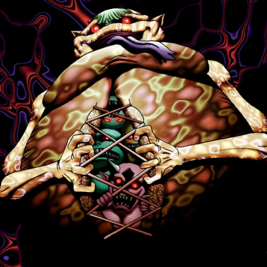

Gate Deeg

Description: "When this card is flipped face-up, the owning player's Summoning Power Points are increased to the maximum value."
STATS
ATK: 700
DEF: 800DECK COST
Deck Cost per Card: 20EFFECT NOT IMPLEMENTED
Fusion List (13 Possible Fusions)
- Gate Deeg + Ancient Brain = Garvas
- Gate Deeg + Baby Dragon = Koumori Dragon
- Gate Deeg + Bolt Penguin = Tripwire Beast
- Gate Deeg + Dancing Elf = Garvas
- Gate Deeg + Happy Lover = Garvas
- Gate Deeg + Holograph = Dice Armadillo
- Gate Deeg + Hourglass of Life = Garvas
- Gate Deeg + Lunar Queen Elzaim = Garvas
- Gate Deeg + Magician of Faith = Nekogal #2
- Gate Deeg + Mega Thunderball = Tripwire Beast
- Gate Deeg + Petit Angel = Garvas
- Gate Deeg + Skelengel = Garvas
- Gate Deeg + Wicked Dragon with the Ersatz Head = Koumori Dragon